1076A48 catalytic converter heat shield - r r
- Path
- Procedures > 10 ENGINE > 1076 EXHAUST PIPES AND SILENCERS > 1076A exhaust pipe fastenings and protections > 1076A48 catalytic converter heat shield - r r
- Kind
- repair procedure (removal / refitting; the operation number is the code)
- Applies to
- engines: 2.0 JTS, 2.5 V6, 1.9 JTD 16v, 2.0 JTS; all production periods
- Interactive page
- https://sloeber94.github.io/elrnDB-a156/en/#/3237564
Applies to: engines: 2.5 V6; all production periods
 Removing
Removing
 Refitting
RefittingPosition the vehicle on the ramp.
Ensure that the ignition key is in the OFF position, then disconnect the negative battery terminal.
 | Name | Connector |
|---|---|---|
- | Battery |
Proceed with removal 7055B54 under-engine guard - r r .
1. Disconnect the electrical connection for the Lambda sensor and release the wiring from the bands.
| Name | Connector |
|---|---|---|
1 | Lambda sensor |
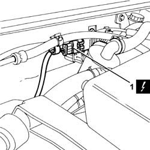
Applies to: engines: 2.5 V6; all production periods
1. Undo the nuts fixing the exhaust outlet pipes from the exhaust manifold, exhaust manifold side.
2. Undo the nuts (2a) and remove the exhaust pipe mounting lower collar (2b).
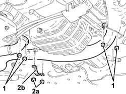
Applies to: engines: 2.5 V6; all production periods
1. Tighten the bolts fixing the catalytic converter to the intermediate exhaust silencer.
2. Remove the catalytic converter (2a), complete with exhaust outlet pipes, from the manifold (2b) and the Lambda sensor.
Remove the gaskets.
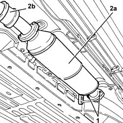
Applies to: engines: 2.5 V6; all production periods
1. Using a drill, remove the rivets (1a) and remove the heat shield for the catalytic converter (1b).
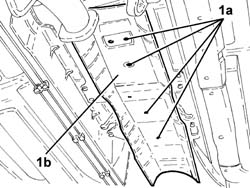
Applies to: engines: 2.5 V6; all production periods
Refitting
RemovingPlace the catalytic converter heat shield back in its housing and secure it using the rivets.
1. Place the catalytic converter (1a), complete with exhaust outlet pipes from the manifold (1b), Lambda sensor and gaskets, back in its housing.
2. Tighten the nuts fixing the catalytic converter to the intermediate exhaust silencer to the recommended torque.
 | Fastening | Component | Ø | Value (daNm) |
|---|---|---|---|---|
2 | - | - | - | - |
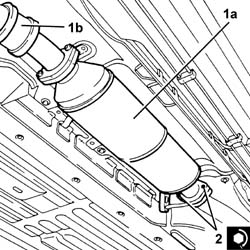
Applies to: engines: 2.5 V6; all production periods
1. Place the lower collar (1a) supporting the exhaust pipe back in its housing and secure using the nuts (1b).
2. Tighten the nuts fixing the exhaust outlet pipe from the exhaust manifold, exhaust manifold side, to the recommended torque.
| Fastening | Component | Ø | Value (daNm) |
|---|---|---|---|---|
2 | Nut | EXHAUST PIPE FROM MANIFOLD | M8 | (exhaust manifold side) 2.5 |
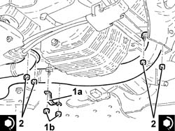
Applies to: engines: 2.5 V6; all production periods
Pass the wiring for the Lambda sensor through its housing, then connect the electrical connection.
Proceed with refitting 7055B54 under-engine guard - r r .
Connect the negative (-) battery terminal.
Remove the car from the ramps.
Applies to: engines: 2.0 JTS, 2.0 JTS; all production periods
Removing
RefittingPosition the vehicle on the ramp.
Ensure that the ignition key is in the OFF postition, then disconnect the battery negative terminal.
| Name | Connector |
|---|---|---|
- | Battery |
Proceed with the removal 1016A40 ignition coil cover on cylinder head- r+r .
1. Disconnect the right Lambda sensor electrical connection and release it from the mounting bracket.
| Name | Connector |
|---|---|---|
1 | Lambda sensor on pre-catalyzer -2 |
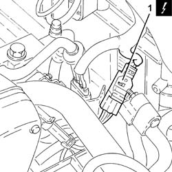
Applies to: engines: 2.0 JTS, 2.0 JTS; all production periods
1. Undo the bolt fixing the bracket for the Lambda sensors' wiring connections to the tappet cover.
2. Undo the two top nuts securing the catalytic converter heat shield.
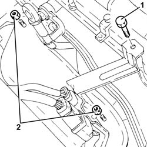
Applies to: engines: 2.0 JTS, 2.0 JTS; all production periods
Proceed with the removal 7055B54 under-engine guard - r r .
1. Undo and remove the right Lambda sensor.
2. Undo the four bottomnuts on the catalytic converter heat shield.
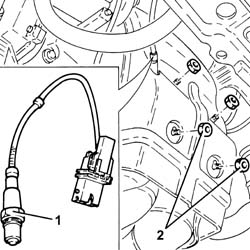
Applies to: engines: 2.0 JTS, 2.0 JTS; all production periods
1. Remove the catalytic converter heat shield.
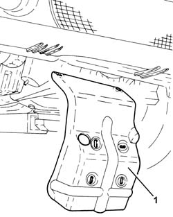
Applies to: engines: 2.0 JTS, 2.0 JTS; all production periods
1. Undo the nuts (1a) and remove the catalytic converter right heat shield (1b).
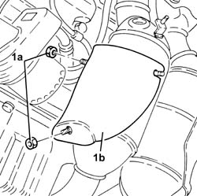
Applies to: engines: 2.0 JTS, 2.0 JTS; all production periods
1. Undo the nuts (1a) and remove the catalytic converter left heat shield (1b).
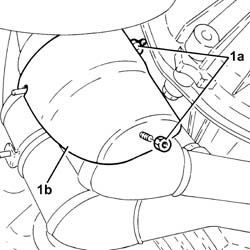
Applies to: engines: 2.0 JTS, 2.0 JTS; all production periods
Refitting
RemovingPlace the catalytic converter left heat shield back in its housing and secure it using the nuts.
Place the catalytic converter right heat shield back in its housing and secure it using the nuts.
Refit the catalytic converter heat shield back in its housing and fix it with the four bottom nuts.
1. Place the right Lambda sensor back in its housing and tighten it to the recommended torque.
| Fastening | Component | Ø | Value (daNm) |
|---|---|---|---|---|
1 | - | RIGHT LAMBDA SENSOR | M18 | 4.0 ÷ 5.0 |
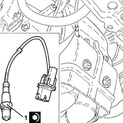
Applies to: engines: 2.0 JTS, 2.0 JTS; all production periods
Proceed with the refitting 7055B54 under-engine guard - r r .
Tighten both upper nuts securing the catalytic converter heat shield.
Tighten the bolt securing the bracket for the Lambda sensors' electrical connections to the tappet cover.
Connect the electrical connection for the right Lambda sensor and secure it to the mounting bracket.
Proceed with the refitting 1016A40 ignition coil cover on cylinder head- r+r .
Connect the battery terminal (-).
Remove the car from the ramp.
Applies to: engines: 1.9 JTD 16v; all production periods
Removing
RefittingPosition the vehicle on the ramp.
Proceed with removal 1080B62 catalytic converter - r + r .
1. Drill out the heat shield retaining rivets.
2. Remove the catalytic converter heat shield.
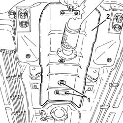
Applies to: engines: 1.9 JTD 16v; all production periods
Refitting
RemovingPlace the catalytic converter heat shield back in its housing and secure it using new rivets.
Proceed with refitting 1080B62 catalytic converter - r + r .
Remove the car from the ramps.
Topics linked from this page (6)
- 1016A40 ignition coil cover on cylinder head- r+r
- 1080B62 catalytic converter - r + r
- 7055B54 under-engine guard - r r
- A1B Battery ( BATTERY NEGATIVE )
- K16 Lambda sensor on pre-catalyzer -2
- K40 Lambda sensor
Topics that link to this page (23)
- 1008A44 rear rigid mount - r r
- 1016C10 cylinder head - r + r and replace gasket
- 1020A20 crank case oil sump - r + r clean seals for sealant application
- 1020D10 front crank shaft oil seal cover - r + r and replace seals with timing belt removed
- 1020D15 Crankshaft oil seal FRONT COVER - R.R. and Replace. gaskets on engines with oil pump on crankshaft and heat exchanger
- 1020D36 flywheel end oil seal - replace for manual gearbox with hydraulic selection versions
- 1020D38 flywheel side oil seal - replace
- 1024B10 engine flywheel - r + r for versions with manual gearbox
- 1024B11 engine flywheel - r r for manual gearbox with hydraulic selection versions
- 1028H10 connecting rod and piston set - r r
- 1076B10 exhaust pipe assembly - r + r
- 1076B34 front catalytic converter attachment seal - replace
- 1080B62 catalytic converter - r + r
- 1084B26 emgine oil intake duct - r r
- 1084C10 engine oil heat exchanger - r + r
- 1084C12 Engine oil HEAT EXCHANGER, complete with engine oil filler and filter - R.R.
- 1088D24 rigid pipe for coolant inlet to water pump - r + r
- 1810A20 clutch - r + r
- 1810A28 clutch - r r for manual gearbox with hydraulic selection versions
- 2110A10 manual gearbox and differential - r + r
- 2110A11 manual gearbox with differential - r r for versions with hydraulic selection
- 2110C24 seals for gearbox input shaft - r r for manual gearbox with hydraulic selection versions
- 4130B40 outlet pipe from pump to power steering case r r